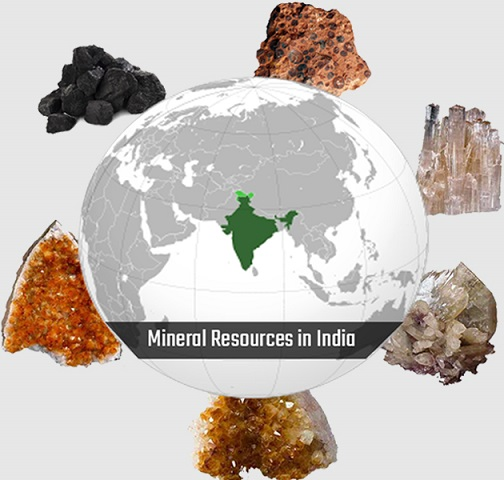
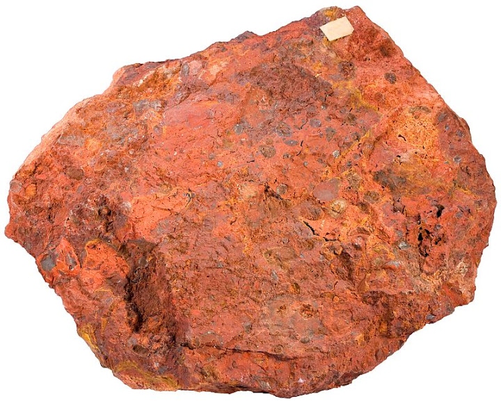
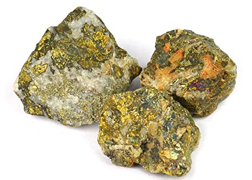
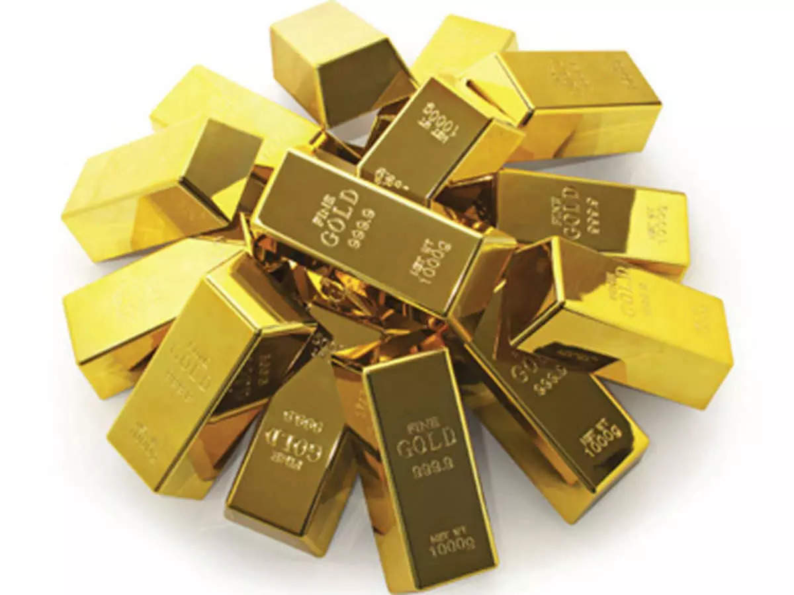
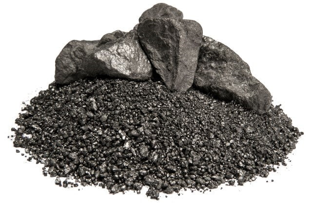
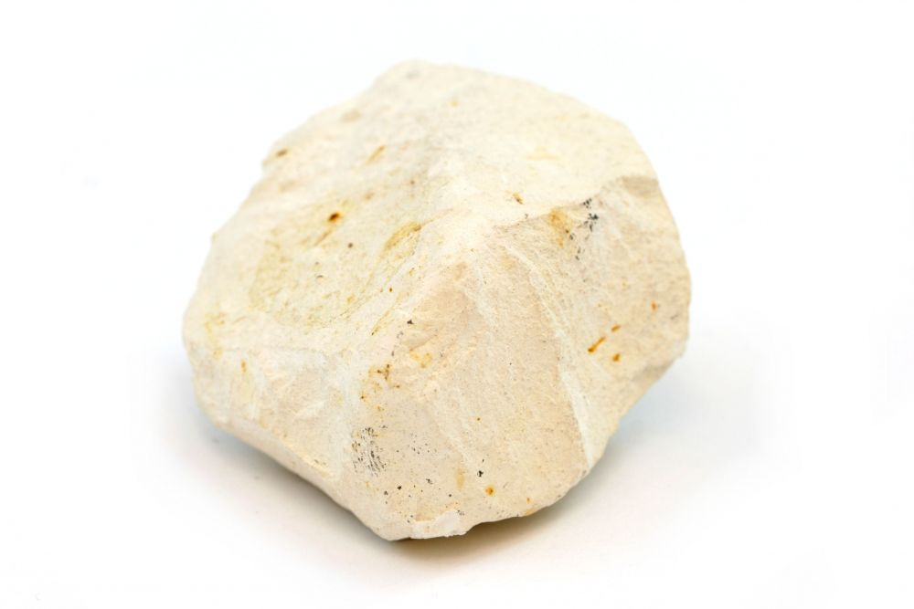
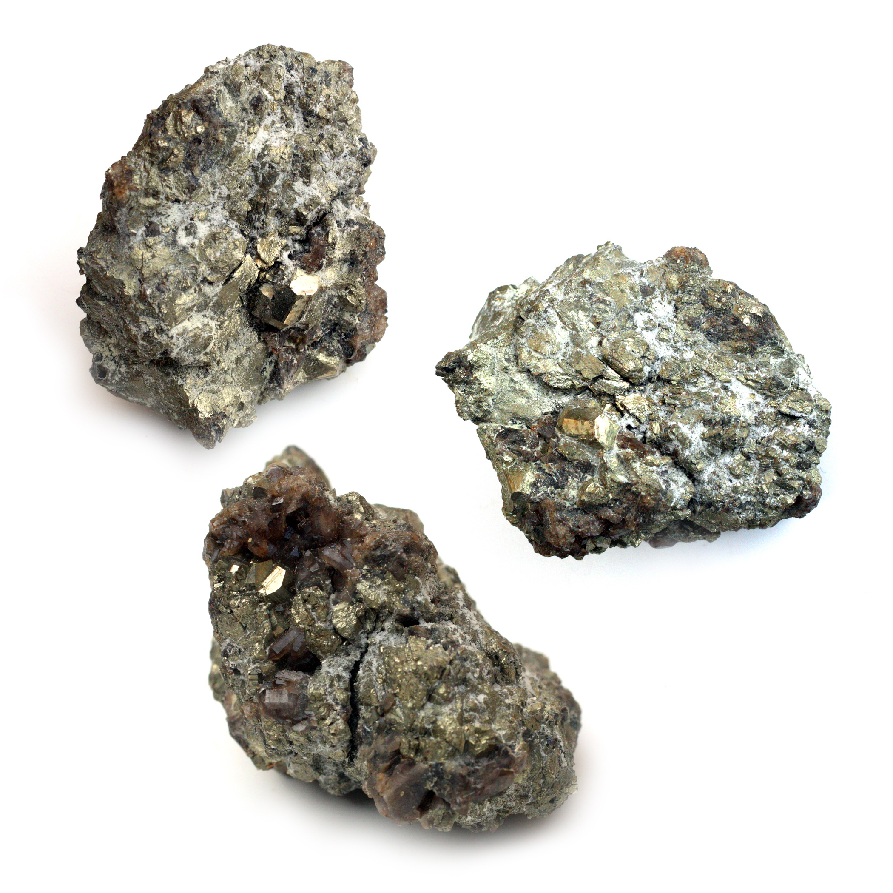
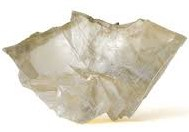
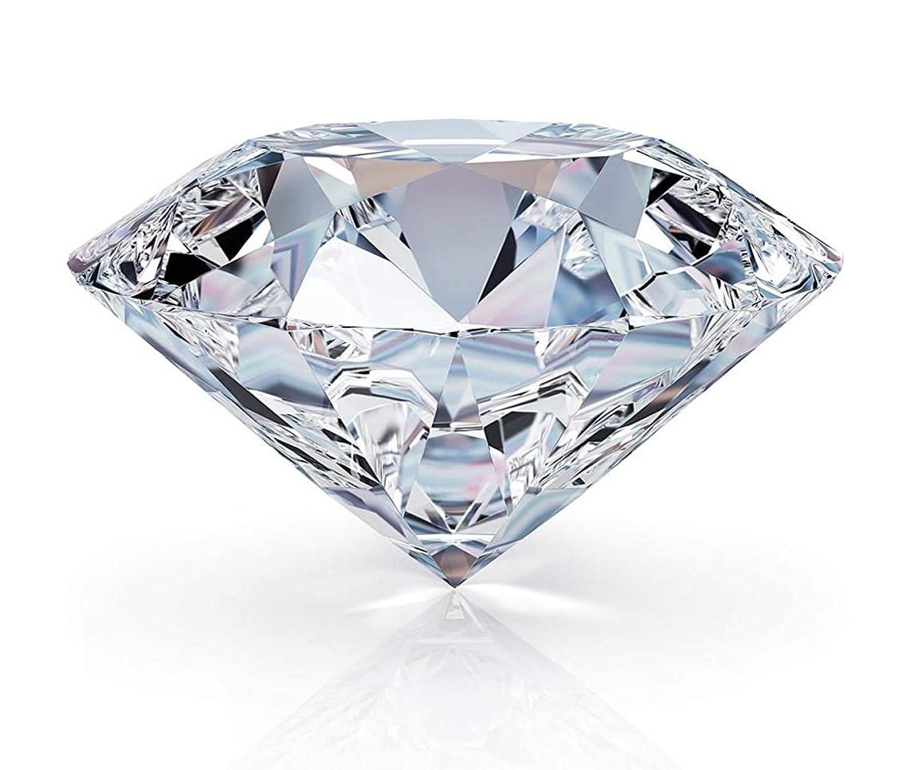

Minerals and Power resources occupy a very important place in our life as machines, ships, ornaments, building, coins and many other things which are associated with the modern civilized life are made of minerals with the help of power.
In other words, power resources help turn minerals into finished goods. But no nation has within its boders, all the minerals and power resources. Unlike agricultural crops, minerals and most of the power resources are fixed in quantity. They are exhaustible and they cannot be replaced, renewed or replenished, hence the need for their conservation.
It is a matter of great satisfaction that India possesses some of the basic mineral and power resources on which industrial growth of our country depends. We have sufficient mineral and power resources to become an industrially self-reliant country. India has large Iron ore deposits. It is very rich in Manganese ore. Bauxite is found in large quantities. Mica is found in abundance here.
India has large deposits of Coal which is the backbone of our industries. Of late, sufficient deposits of oil have been discovered. This is a very important industrial fuel which is of great value both in war and peace. India as great potential of water-power resources which are being developed to compensate for the relative shortage of cooking coal and other exhaustible power resources.
Minerals are known as non-renewable resources. This is because the mineral can be extracted only once from the earth’s crust. Minerals are defined as homogenous substance, which has a specific chemical composition and is produced by natural inorganic processes. Minerals, being the vital raw material for many basic industries, play an important role in the industrialization and overall developments of nation.

|
1. Terrestrial Mineral ResourcesA great variety of inorganic materials for industrial technological growth are obtained from the earths’ crust e.g., iron, aluminum, copper, silver, gold, platinum. In addition there are some such elements, which are, needed in large quantities, but are very useful for modern industrial processes. These are vanadium, tungsten and molybdenum used primarily as catalysts and hardeners. Besides this, there are some non-metals which are also useful for industrialized nation and these are sand, and gravel, cement, clay, salt, sculpture phosphorus, diamond as well as the chemical by products of petroleum refining. |
2. Marine Mineral ResourcesThese are those minerals which are dissolved in water sediments on the sea bed at various depths and these present at some depth below the floor of the sea. The most common elements, which can be extracted, are strontium, boron, silicon, fluorine, argon, nitrogen, lithium, rubidium and phosphorus. The deep sea basin contains enormous quantities of minerals such as nickel, magnesium, cobalt and copper.So, India occupies very prominent position in the world market for production and export of other minerals, chief among which are ores of iron, aluminum, magnesium and titanium besides high-grade refractories and insulating minerals and gemstones. |

|
|  |
Aluminium Ore – Bauxite (Al2O3.nH2O)It is the chief ore of aluminium. Deposits of this mineral are widespread in India, its major occurrences being in Bihar, Gujarat, Jammu and Kashmir, Karnataka, Kerala, Maharashtra, Madhya Pradesh, Orissa and Tamil Nadu. Since 1971, many new reserves of bauxite have been discovered in Andhra Pradesh, Orissa, Goa and Uttar Pradesh. The total reserves of bauxite in India are now estimated around 2500 million tonnes.Indian bauxite deposits are mostly related to a sedimentary residual type of rock laterite that occurs in the form of caps on the hills. The laterites and bauxite deposits result due to complex chemical weathering of parent rocks of varied compositions. |
Copper Ores – Chalcopyrite (CuFeS2)Chalcopyrite (CuFeS2) is the single most important ore of copper although there are many other minerals that contain copper. In India copper ore is presently being mined commercially in Bihar (Singhbhum district), Madhya Pradesh (Balaghhat district) and Rajasthan (Jhunjhunu and Alwar districts). Copper ores are also extracted in small volume in Andhra Pradesh (Khamman district), Karnataka (Chitradrug and Hassan district) and Sikkim.Occurrence of copper ores has been reported from many other states. Total reserves of chalcopyrite are estimated around 1250 million tonnes with a metal content of about 90 lakh tonnes. |
 |
|  |
GoldThe yellow metal, as it is called, has its own unrivalled place in the economy of a country. Its industrial utility may not be as broad based and significant as of many other metals, but its nobility (in terms of its non-reactivity to many chemicals) and beauty have retained for it the title of king of metals.In India, gold occurrences are known from a large number of areas, almost from each state. However, presently gold is extracted only at three places, two in Karnataka and one in Andhra Pradesh. Gold occurs most commonly as a native metal containing silver as an impurity. It forms lodes or small pockets of deposits in igneous veins. It also occurs in quartz-reefs which traverse any type of rock. The reef-quartz is then referred as auriferous-quartz. Gold grains or auriferous gravels or sands have also been recovered from many placer deposits. The Kolar Goldfields are located in Karnataka in schistose rocks where auriferous quartz lodes occur in numerous closely placed mineralized zones. The total ore reserves in these fields are estimated at about 4.0 million tonnes with an ore value of 31.5 tonnes. The Hutti Gold Mines are also located in Karnataka state in Raichur district where the gold lodes occur along fractures within chlorite schists and greenstones in a highly irregular manner. The Ramagiri Gold Fields lie in the area of the same name falling in Anantapur district of Andhra Pradesh. The mineralization has occurred along shear fractures in sericite phylites. The ore reserves are placed at one million tonnes containing about 5 tonnes of gold. Total in-situ gold reserves of the country are placed at 50 million tonnes with a total gold content of more than 100 tonnes. However, recent investigations of Geological Survey of India have shown very promising trends from other parts of the country. Silver is obtained in our country as a by-product in the extraction of lead and gold from their ores. In Bihar it is recovered during refining of lead, and in Karnataka during refining of gold ore at Hutti and Kolar. The country meets its need from domestic sources. |
IronIf gold is the king of metals, then iron is certainly the chieftain or commander. It has retained this position in almost all civilizations throughout the recorded history. The two main ores of iron are: Hematite (Fe2O3) and Magnetite (Fe3O4)In India, we have extensive deposits of these ores estimated as at present around 12000 million tonnes of Hematite and 9000 million tonnes of magnetite. Of these, 5300 million tonnes of hematite and 600 million tonnes of magnetite are already proved. Extensive deposits of iron ores of good quality occur in India in Bihar, Orissa, Madhya Pradesh, Andhra Pradesh, Karnataka and Goa besides Tamil Nadu and Kerala. Isolated deposits have also been recorded in Jammu-Kashmir, Punjab, Himachal Pradesh and Haryana. |
 |
|  |
Limestone (CaCO3)A very important rock of great economic importance, limestone is the principal raw material of Portland cement. It is a sedimentary rock and occurs in the form of extensive layers spread over many hundred kilometers in various parts of country. It is also used as a building stone.The rock occurs in almost all the states. Major producing states are – Madhya Pradesh, Tamil Nadu, Andhra Pradesh, Gujarat, Bihar, Orissa, Rajasthan and Karnataka. |
Nuclear MineralsIn the developed countries, atomic energy is the main source of their power, electric as well as political, because it is cheaper and consistent in the longer run. The power is derived from a group of radioactive minerals, that is which are undergoing radioactive decay yielding energy as a by-product. This energy when captured and used properly offers enormous applications – in peace and war time.In India, occurrences of uranium in exploitable quantities have been recorded mainly in Bihar and Rajasthan. In Bihar, the mineral occurs in various forms in Singhbhum district. The uraninite mines at Jadugade have mineralization in metamorphic rocks. In Rajasthan, the uraninite mineralized zones are located at Udaipur, Bhilwara, Alwar, Jhunjhunun and Dungarpur districts. Dissemination of uraninite has also been reported from some other states. The thorium group of minerals, especially allanite, has been reported from Tamil Nadu (Madurai district) and Andhra Pradesh (Balegudaba). Monazite has been observed in good proportion in beach sands both along western coasts and eastern coasts for many hundred kilometers along Kerala, Andhra Pradesh, Tamil Nadu and Orissa. Beryl, the retarder mineral has been reported from Bihar, Rajasthan and Andhra Pradesh. Graphite, the moderator occurs in Orissa, Bihar, Madhya Pradesh and Andhra. |
 |
|  |
Gypsum (CaSO42H2O)This mineral is an important raw material in the manufacture of – (i) cement; (ii) fertilizer-ammonium sulphate, (iii) sulphuric acid, and also as a secondary material in many other applications. Gypsum commonly occurs as a mineral of secondary (sedimentary, chemically precipitated) origin associated with other sedimentary formations in the form of intervening layers, stringers and extended beds. It may be compact and massive, sometimes crystalline but is often friable, soft and dirty white in appearance.In India, gypsum is found almost in all states but mining is localized. It is extracted for different applications in the states of Jammu and Kashmir, Rajasthan, Himachal Pradesh, Tamil Nadu and Gujarat. Total reserves of gypsum are estimated at 1200 million tonnes, of which 18.8 lakh tonnes are considered recoverable. |
Diamond (C)The mineral is a precious gem when in pure crystal form and is of industrial value when found in coloured varieties and grains. This is because of its greatest hardness (10-in the Mohs scale). It occurs in igneous rocks and also in placers as an accumulated deposit.In India, diamonds have been produced only in Madhya Pradesh from the well-known Panna diamond mines. Here the mineral occurs in volcanic pipes mixed with primary magmatic rocks and also from the conglomerate deposits around the hill. Other diamond bearing areas are in Kurnool district in Andhra Pradesh. Total diamond reserves of country as estimated at present are placed around about one million carats. |
 |